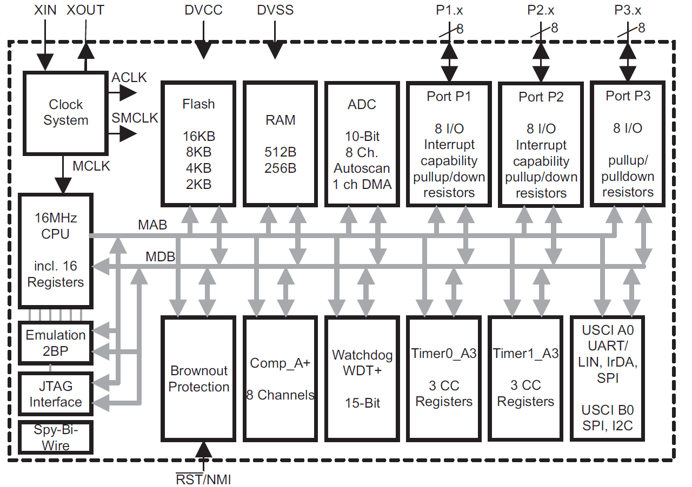
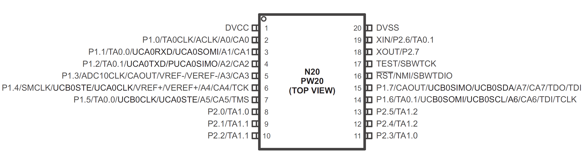

⇐
General introduction
MSP430
There are several families of MSP430s,
all with the same basic set of opcodes:
- 100 series - e.g. MSP430F149
- 200 series - e.g. MSP430G2553
- 300 series - Masked ROM version, e.g. MSP430C325
- 400 series - e.g. MSP430F412
- 500 series - e.g. MSP430FR5739
- 600 series - e.g. MSP430F6433

Some differences between them:
- I/O-port structure
- ADC
- Timers
- Memory lay-out etc.
MSP430G2553
The 'Egel project' concentrates mainly on the MSP430G2553 processor
with the following hardware:
The Egel kit is basically a clone of the MSP-EXP430G2 Launchpad.

Here we use a Launchpad to put an executable on the Egel kit.
1) Launchpad as In System Programmer (video)
2) Launchpad as ISP programmer (article)
Most of the examples also run on other MSP430 processors,
but sometimes you will have to adapt the hardware addresses.
There are some examples specially for the MSP430F1xx and the MSP430FR5xxx.
Shields
We recommend to use a 'shield' for your experiments
because that will save you a lot of soldering.
The Egel Kit has already a shield, for the Launchpad starter Kit
you could build
the Launchpad Explorer (English)
or in DutchLaunchpad experimenteerkit,
otherwise buy an 'Egel shield' from the author.


The Egel Kit is versatile. It has a 2 Amp. mosfet power output and accepts on its pins
ready made components, for example:
Serial Bluetooth module, nRF24L01 transceiver, infrared receiver, Analog sensors, power steering, etc.
Links to components, ready made modules and backgound information are added where needed.
noForth
We use noForth in our examples.
Forth is an interactive compiler/interpreter.
It fits in about 8 kByte of the 16 kByte Flash, so there remains enough workspace.
For example to control an autonomous legged robot or control over 300 multicolor leds
using an infrared remote control.
The noForth language is a 16 bits ISO standard, as far flash memory makes that possible.
Once noForth is on the board,
you only need a simple terminal program to execute or compile noForth code
or to erase the compiled code.
There is a noForth for MSP430F149, MSP430G2553, MSP430FR2433,
MSP430FR59x9, etc.
See the
noForth page
under 'Downloads'.
The noForth metacompiler (crosscompiler) is also available.
It runs under a 32 or 64 bit ISO Forth system.
Hardware, assembler and forth
Forth is well equipped for hardware control because
it has the commands to access the hardware interactively and directly.
No need to embed your commands in a bigger context program
that regulates preferences or handles the input or output.
To extract that last bit of performance or for writing code that is
executed by an MSP430 interrupt, it is an advantage that
machine language can be used organically in forth.
Fortunately the MSP430 has a simple and beautiful instruction set.
TI documentation
There is a lot of TI documentation, well written, but hard to decode.
The information often must be gathered from several documents, e.g.
MPU document and Family User's Guide.
In addition you can find examples in assembly or in C
and also the
Energia platform
offers some information.
Egel tries to fill in the gap, by giving working examples together
with links to the TI-documentation.

The two most used documents in this project:
MSP430x2xx Family users guide:SLAU144J.PDF
Datasheet MSP430G2x53:SLAS735J.PDF
⇐